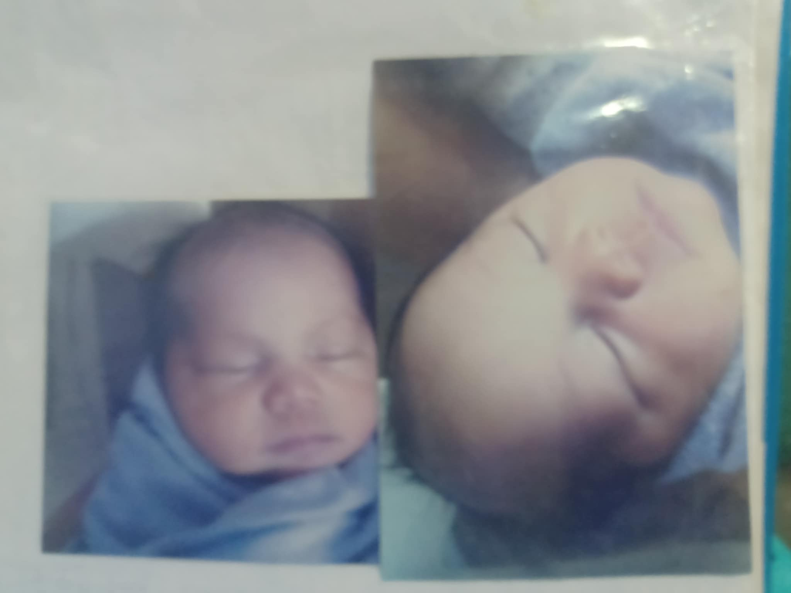
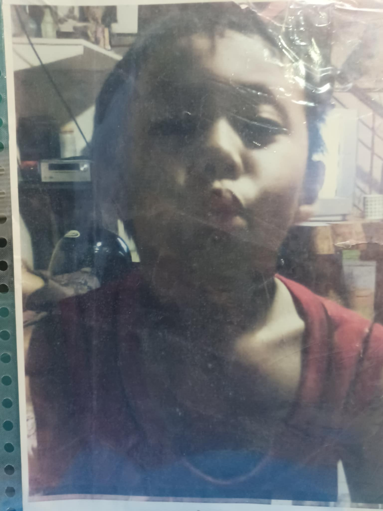
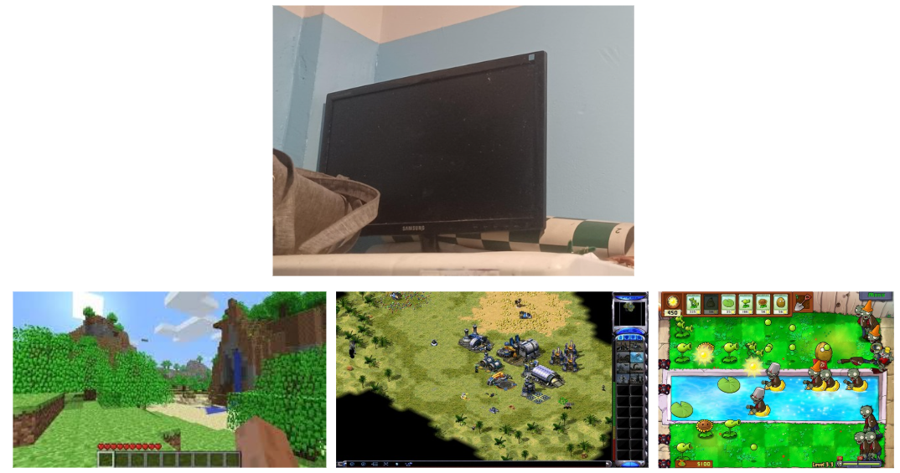
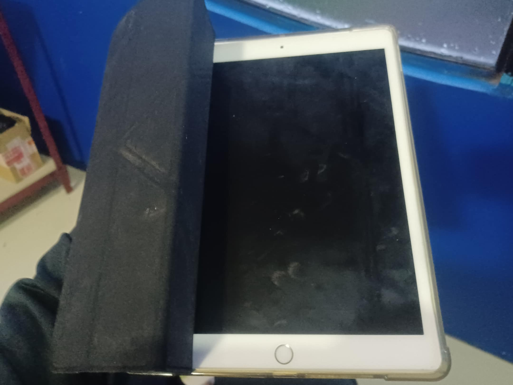
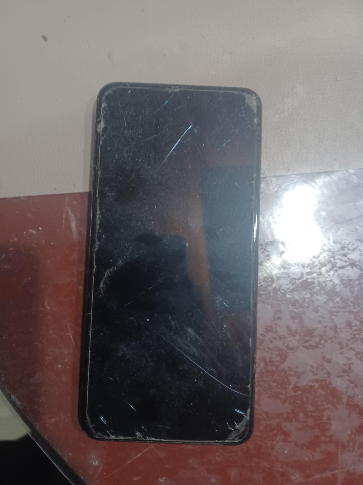
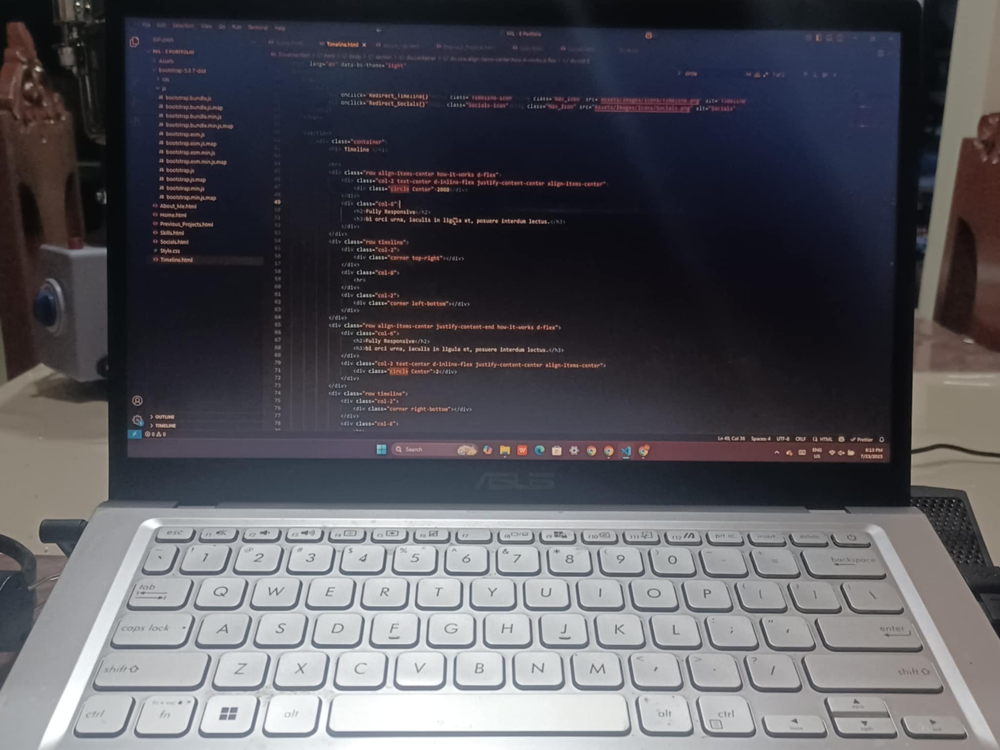

Birthday!

Born on July 18, 2008. That was when the last
member of our family was born, me! The most "techy"
person in the family who you will see gets to play
around with the most amount of technology in the
family from a very young age.
Taste of technology

As said before, I was very young when I was first
exposed to technology, this picture was when I was
3 years old and was already toying around with
the CRT-TV (Cathode Ray Tube Television to the
right behind me)
Gaming Addiction

at just 4 years old, we already had a small desktop
computer, and I was basically on it 24/7 (not really
but I used it the most) on this very old computer
were all of the timeless games I used to play,
namely Plants vs Zombies, Red Alert 2 Yuri's Revenge
and Minecraft.
Ipad Kid

At 8 years old, my mom gave both me and my middle
sister our own Ipads. It was one of the first
devices I've ever owned myself and I used it
alot until it broke sometime around 2020
First Phone

Crazy to think that I got an Ipad first before a
phone, but that is true. Anyways, my first phone
was a Vivo V15 pro which intermittenly broke a couple
times until I decided it was far to old to be fixed
again.
My current PC

At the start of Grade 9, my aunt also bought my
laptop for me which I am still using to this
day. I can only speculate how many hours I've
spent at this thing.